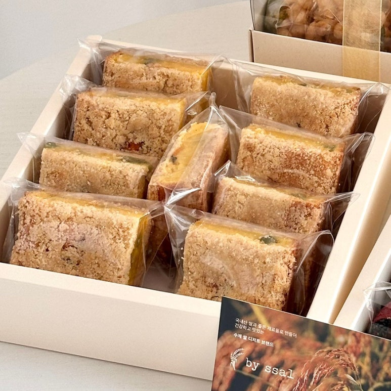

The finest Medjool dates — the "king of dates" — stuffed generously with oven-roasted nuts. A chewy, persimmon-like texture meets rich, nutty filling for a healthy luxury dessert.
Medjool dates are the largest and most prized variety of dates, known for their caramel-like sweetness and soft, chewy texture. Each date is hand-stuffed with a blend of oven-roasted premium nuts for added crunch and nutrition.